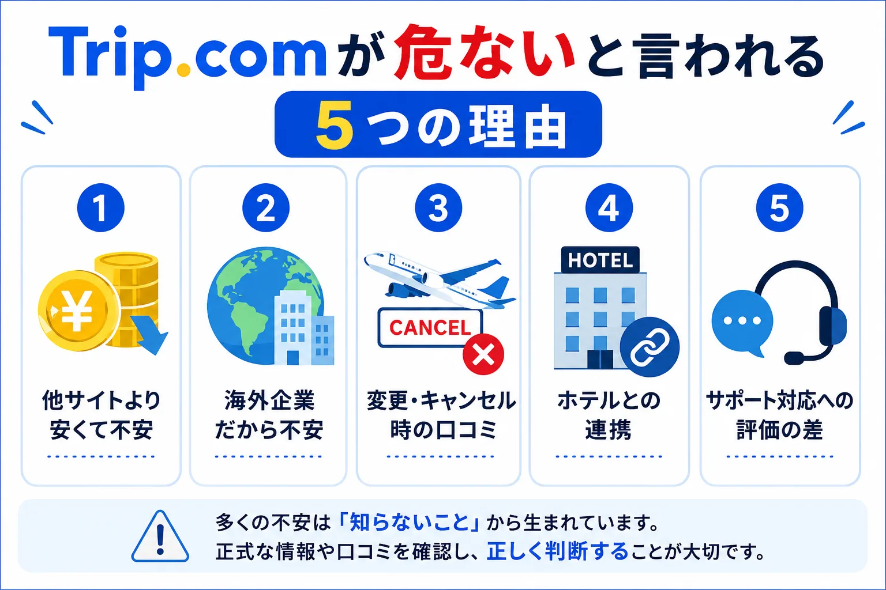
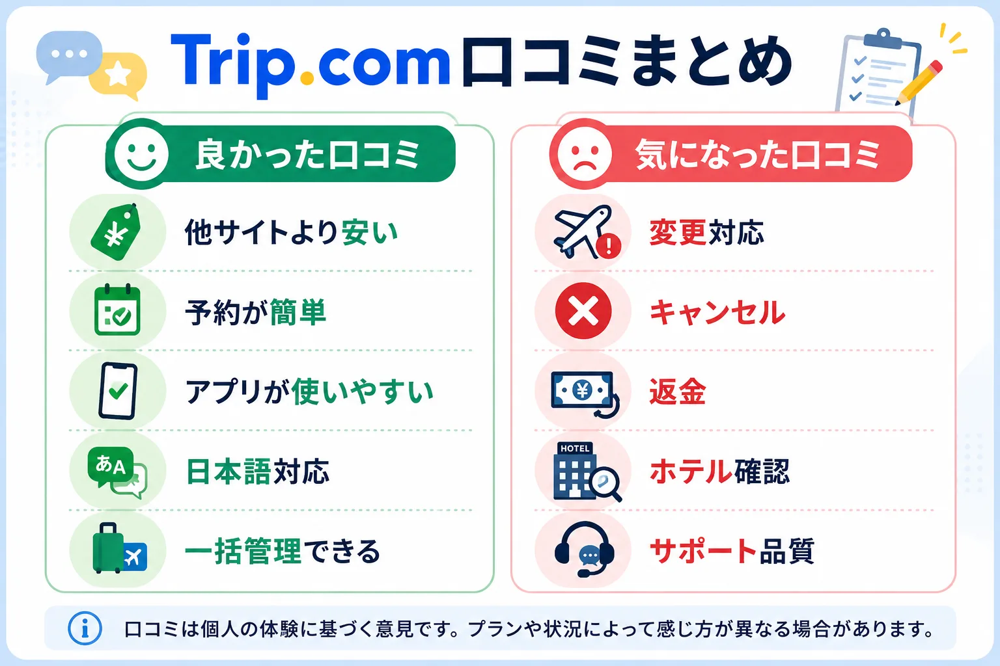
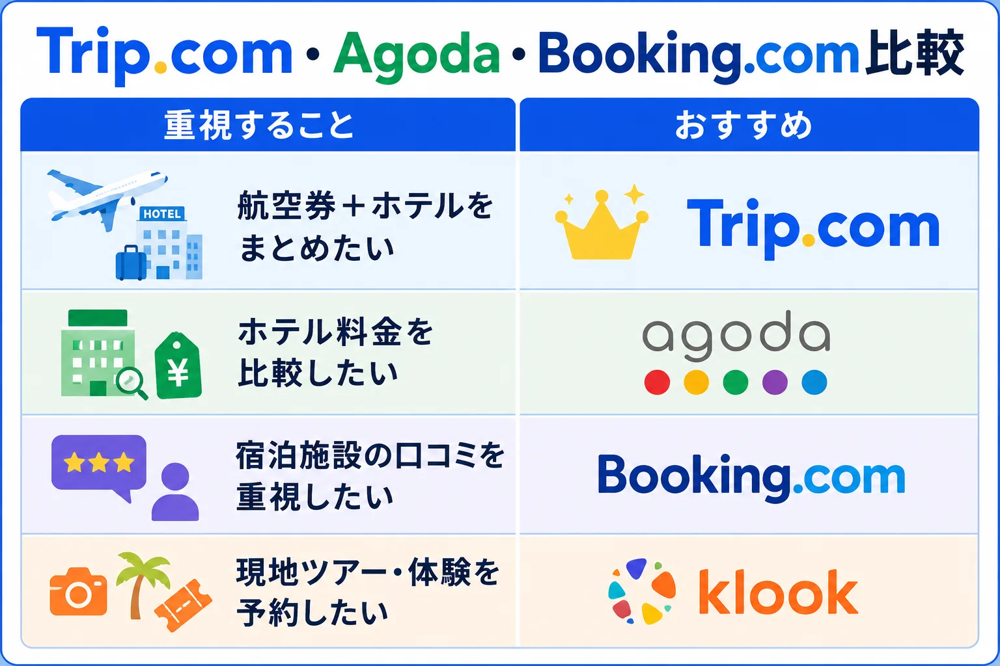
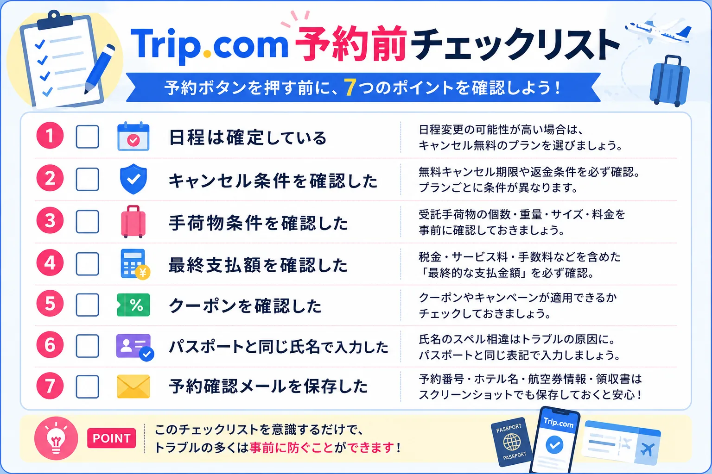

結論｜Trip.comは危ないサービスではありません
結論から言うと、Trip.comは「危ない」「詐欺」と決めつけるようなサービスではありません。
運営するTrip.com Groupは1999年設立の旅行会社で、NASDAQと香港証券取引所に上場しています。航空券、ホテル、鉄道、レンタカー、現地ツアー、eSIMなどを扱う世界的なオンライン旅行会社（OTA）の一つです。
では、なぜ「Trip.com 危ない」と検索されるのでしょうか。調査して見えてきたのは、通常予約そのものよりも、変更・キャンセル・返金など予定外の対応に不安や不満が集まりやすいという点です。
つまりTrip.comは「予約できないサービス」ではなく、「イレギュラー対応で評価が分かれるサービス」と捉える方が実態に近いでしょう。
この記事で分かること
- Trip.comは本当に安全なのか
- 危ないと言われる理由
- 良い口コミ・気になる口コミの傾向
- Agoda・Booking.com・Klookとの違い
- 失敗しない予約前チェック
「安いから予約する」ではなく、条件まで見て納得して予約するための判断材料として活用してください。
DIVERRA編集部より
現時点では、Trip.comの公式情報と公開口コミをもとに解説しています。DIVERRAでは2026年以降の海外旅行で実際の予約手順や使い勝手を確認し、必要に応じて体験ベースの内容を追記する予定です。
なぜTrip.comは危ないと言われるのか
「危ない」と検索する人の多くは、すでに大きなトラブルに遭った人だけではありません。むしろ、予約前に「本当に大丈夫かな」と確認している段階の人が多いはずです。
旅行予約は数万円から十万円を超えることもあります。海外旅行では航空券、ホテル、空港送迎、通信手段のどれか一つでつまずいても、旅全体に影響します。慎重になるのは自然です。
安いから怪しいと感じてしまう
Trip.comでは、セール、会員価格、クーポン、提携割引などにより、ほかの予約サイトより安く表示されることがあります。ただし、安いこと自体が危険を意味するわけではありません。
大切なのは、表示価格だけで判断せず、税・サービス料、手荷物条件、キャンセル条件、支払い通貨まで確認することです。
海外企業だから不安という声もある
Trip.comは海外発のサービスですが、正体の分からない予約サイトではありません。Trip.com Groupは上場企業であり、Skyscannerも同じグループに含まれます。
一方で、日本の旅行予約サイトに比べてなじみが薄い人も多いため、「海外サービス＝不安」と感じやすい面はあります。
変更・キャンセル時の口コミが目立つ
公開口コミで目立つのは、フライト変更、キャンセル、返金、ホテル側での予約確認など、予定外の対応に関する内容です。
航空券やホテルは、Trip.comだけで完結するものではありません。航空会社やホテルの規定も関わるため、問い合わせや返金に時間がかかるケースがあります。

Trip.comの口コミ・評判から分かること
旅行予約サイトを選ぶとき、口コミは大切な判断材料です。ただし、口コミには「満足した人より、不満があった人の方が投稿しやすい」という偏りもあります。
そのため、ひとつの投稿だけで判断するのではなく、Trustpilot、Google Play、App Storeなど複数の公開レビューで共通する傾向を見ることが大切です。
良い口コミで多い内容
- 他サイトより安く予約できた
- 検索から予約完了までがスムーズだった
- アプリで航空券・ホテル・eSIMなどをまとめて確認しやすい
- 日本語表示があり、海外サービスとしては使いやすい
気になる口コミで多い内容
- 航空会社都合の変更時に対応へ時間がかかった
- 返金の反映まで時間がかかった
- ホテル側で予約確認に時間がかかった
- サポート対応への評価が分かれた
口コミから読み取るべきなのは、「Trip.comが危ないか」だけではありません。何が起きた口コミなのか、利用者側で事前に避けられるトラブルなのかを分けて見ることが大切です。

Trip.comを使うメリット
航空券からeSIMまで一括で管理しやすい
Trip.comでは、航空券、ホテル、鉄道、レンタカー、空港送迎、現地ツアー、eSIMなどを一つのアカウントで確認できます。海外旅行中に予約メールを探し回るより、アプリでまとめて見られる方が便利な場面は多いでしょう。
通信準備がまだの方は、海外旅行eSIMの選び方やタイのデータローミング比較もあわせて確認しておくと安心です。
航空券やホテルが安く表示されることがある
Trip.comは、セール、会員価格、クーポンなどにより、条件によっては他サイトより安く見えることがあります。ただし、いつでも最安値とは限りません。
DIVERRAでは、Trip.comを最初の比較候補に入れ、Agoda・Booking.com・公式サイトと条件を揃えて確認する方法をおすすめします。
日本語で利用しやすい
日本語サイトやアプリが用意されているため、海外の予約サービスに慣れていない人でも比較的使いやすい構成です。問い合わせ前には、予約詳細画面とヘルプページの最新案内も確認しましょう。
Trip.comのデメリットと注意点
日程変更に弱い予約は慎重に選ぶ
変更・キャンセルの可能性がある旅行では、最安プランだけで決めるのは危険です。返金不可プランは安く見えますが、予定が変わったときの負担が大きくなります。
キャンセル条件はプランごとに違う
同じホテルでも、キャンセル無料、一部返金、返金不可など条件が分かれます。予約前に「いつまで無料か」「返金方法は何か」「航空券の場合は手荷物条件が含まれるか」を確認してください。
最終支払額を必ず確認する
表示価格だけでは比較できません。税・サービス料、朝食、手荷物料金、支払い通貨、キャンセル条件を含めた最終支払額で比べることが大切です。
Trip.com・Agoda・Booking.com・Klook比較
旅行予約サイトは、目的によって向き不向きがあります。どれか一つを絶対視するより、予約したい内容に合わせて使い分ける方が失敗しにくくなります。
| 重視すること | おすすめ候補 | 理由 |
|---|---|---|
| 航空券とホテルをまとめたい | Trip.com | 航空券、ホテル、鉄道、eSIMなどを一括管理しやすい |
| ホテル料金を比較したい | Agoda | アジア圏のホテル比較で候補に入れやすい |
| 宿泊施設の口コミを重視したい | Booking.com | 宿泊施設レビューを確認しながら選びやすい |
| 現地ツアーや体験を予約したい | Klook | 観光チケット、現地ツアー、アクティビティに強い |

Trip.comの紹介特典を確認する
Trip.comが自分に合いそうだと感じた方は、紹介ページから新規登録特典を確認できます。
確認時点では、航空券やホテルの予約に使える800円相当の限定割引クーポンが案内されています。特典内容や対象条件は変更される可能性があるため、登録前にリンク先で最新情報を確認してください。
※本リンクはDIVERRAの紹介リンクです。登録・予約条件によって特典を利用できない場合があります。最新の内容はリンク先でご確認ください。
Trip.comがおすすめな人・おすすめしない人
| おすすめな人 | 慎重に比較したい人 |
|---|---|
| 航空券とホテルをまとめて管理したい | 日程変更の可能性が高い |
| クーポンや会員価格も含めて比較したい | 返金不可プランを避けたい |
| アプリで予約情報を一括確認したい | ホテル公式との直接やり取りを重視したい |
| 海外旅行の通信や送迎も同時に探したい | サポート品質を最優先したい |
迷ったときは、Trip.comだけで決めず、Agoda、Booking.com、公式サイトも同じ条件で比較してください。価格差よりも、キャンセル条件や最終支払額の差が重要になることがあります。
予約前チェックリスト

予約ボタンを押す前に、次の7項目を確認しましょう。
- 日程は確定している
- キャンセル条件を確認した
- 手荷物条件を確認した
- 税・サービス料を含む最終支払額を確認した
- クーポンやキャンペーン適用条件を確認した
- パスポートと同じ氏名で入力した
- 予約確認メールと予約番号を保存した
タイ旅行の予算もあわせて整えるなら、タイ旅行で現金はいくら必要？、タイ旅行でクレジットカードは使える？も参考になります。
よくある質問
Trip.comは安全ですか？
Trip.comは世界的なオンライン旅行会社の一つです。ただし、変更やキャンセル時は航空会社やホテルの規定も関係するため、予約前に条件を確認することが大切です。
Trip.comは詐欺ではありませんか？
Trip.comを運営するTrip.com GroupはNASDAQと香港証券取引所に上場している企業です。正体不明の予約サイトではありません。
AgodaとTrip.comはどちらがおすすめですか？
ホテル料金を中心に比較したい場合はAgodaも候補になります。航空券、ホテル、eSIM、送迎までまとめて管理したい場合はTrip.comが便利です。
Trip.comは日本語で利用できますか？
Trip.comは日本語サイトや日本語アプリに対応しています。サポート体制は予約内容や問い合わせ方法によって異なるため、緊急時は予約詳細画面から最新の案内を確認してください。
Trip.comで予約後にキャンセルできますか？
キャンセル可否や返金条件は予約したプランによって異なります。キャンセル無料、一部返金、返金不可など条件が分かれるため、予約前に必ず確認しましょう。
まとめ
Trip.comを調査した結果、「危ない」というイメージだけで避ける必要はありませんでした。
一方で、変更やキャンセルが発生した場合は、航空会社やホテルの規定も関わります。条件を確認せずに最安プランだけで予約するのはおすすめできません。
Trip.comを上手に使うポイントは、価格だけではなく、キャンセル条件、手荷物、税・サービス料を含めた最終支払額まで比較することです。
Trip.comの紹介特典を確認する
旅行日程が決まっている方は、Trip.comの紹介特典と現在の航空券・ホテル料金を確認してみてください。表示価格だけで決めず、キャンセル条件や手荷物、税・サービス料を含む最終支払額まで比較してから予約するのがおすすめです。
※本リンクはDIVERRAの紹介リンクです。特典内容・対象条件・有効期限は変更される可能性があります。最新情報はリンク先でご確認ください。